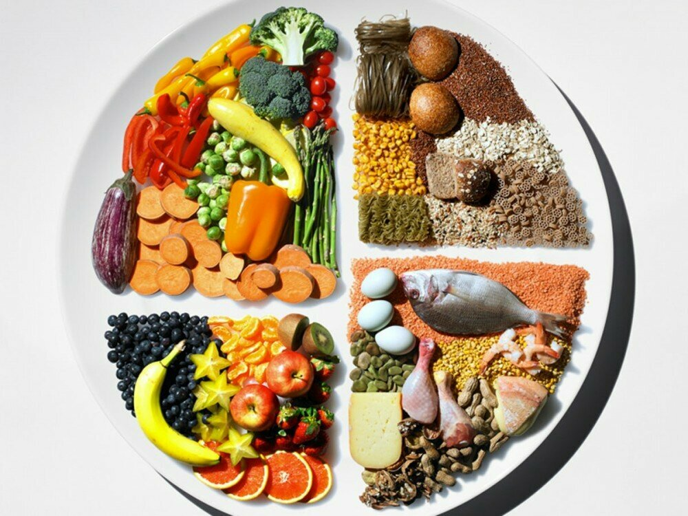
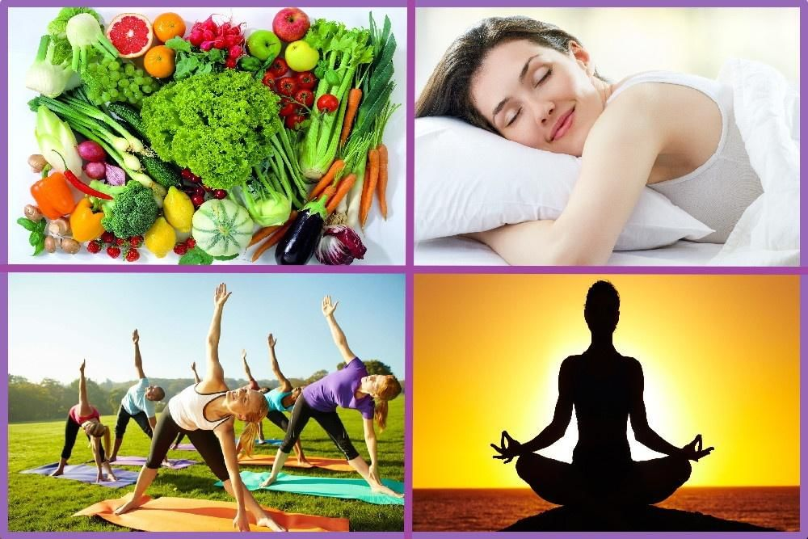
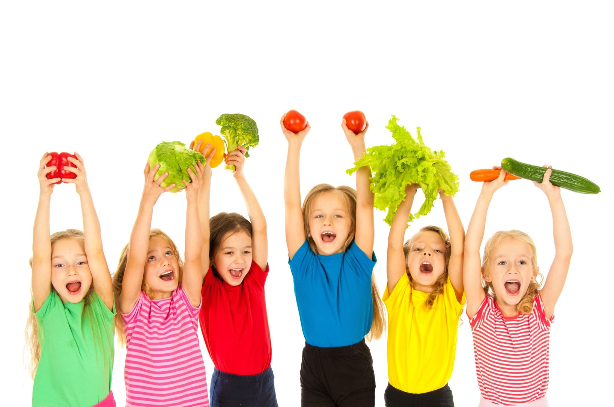
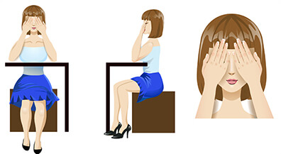
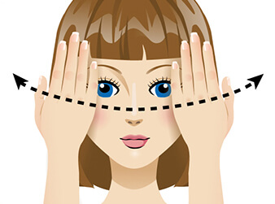

Здоровый образ жизни — это индивидуальная система поведения человека, обеспечивающая ему физическое, душевное и социальное благополучие в реальной окружающей среде (природной, техногенной и социальной) и активное долголетие.
Преимущества здорового образа жизни
- укрепление иммунитета и снижение заболеваемости вирусными и инфекционными недугами;
- достижение активного долголетия и сохранение даже в старости дееспособности и подвижности;
- снижение риска развития хронических заболеваний, увеличение длительности периода ремиссий;
- избавление от плохого настроения, депрессий и стрессов;
- активное участие в социальной и семейной деятельности;
- возможность заниматься любимым делом даже в старости;
- ежедневно вставать и ощущать себя полным сил и энергии;
- подавать правильный пример родственникам и детям;
- иметь красивое тело и чистую кожу без прыщей и морщин;
- увеличение возраста появления первых возрастных изменений в организме;
- чувство, что всё возможно и достижимо.
Сбалансированное питание:
- Рацион питания должен быть разнообразным, включать в себя молочные и мясные продукты, свежие овощи, фрукты, ягоды и зелень, бобовые и зерновые, морепродукты и рыбу.
- Достаточное потребление жидкости. Для среднего взрослого человека нормой считается 2 л чистой воды в день в обычное время и 3 л – в жаркое.
- Калорийность суточного рациона не должна превышать норм. В среднем этот показатель для взрослого человека – 2200-2600 ккал.
- Режим питания также имеет огромное значение. Забудьте об объеданиях на ночь или постоянных перекусах в виде гамбургеров и бутербродов. Начните придерживаться режима дня, в котором примерно в одно и то же время у вас завтрак, второй завтрак, обед, полдник и ужин.
- Всю пищу кушайте медленно и тщательно её пережевывайте.
- Готовьте только на 1-2 раза, потребляйте всегда свежие продукты.
Интересные сайты о питании
Занятия спортом
Утро начинайте с водных процедур и сделайте гимнастику. Обязательно гуляйте, желательно на свежем воздухе, не менее 2-3 часов в день. Посещайте бассейн. Плавание поможет укрепить мышцы спины и пресса.
Утро начинайте с водных процедур и сделайте гимнастику. Обязательно гуляйте, желательно на свежем воздухе, не менее 2-3 часов в день. Посещайте бассейн. Плавание поможет укрепить мышцы спины и пресса.
Одним из оптимальных видов физической активности считается активных отдых. Это может быть любой вид спорта, катание на велосипеде, утренняя пробежка или активные игры на природе. Но самым лучшим активным отдыхом являются пешие прогулки на природе.
Физическая активность важна как для укрепления мышечной системы, так и для укрепления мышечной системы, так и для психологической разгрузки, так и для укрепления всех без исключения систем организма. Поэтому – вперед на прогулку, наслаждаться свежим воздухом и хорошим настроением! Главное, одеться по погоде и тогда ваши физические нагрузки будут только на здоровье Вам.
Личная гигиена
Главное требование гигиены – держать тело в чистоте. Это избавит вас от риска получить заболевания, связанные с размножением бактерий и паразитов. Для этого надо соблюдать элементарные правила гигиены.
- Обязательно чистите зубы после утреннего пробуждения и перед тем, как отходить ко сну.
- Регулярно мойте голову.
- Содержите в чистоте расчёски, резинки и заколки для волос.
- Принимайте душ или ванну 2 раза в день.
- Обязательно мойте руки по приходу домой, до и после еды, после игры с животными, после туалета.
- Уделяйте внимание чистоте вашей одежды и обуви.
Гимнастика для глаз
Первые упражнения для сохранения зрения были созданы задолго до нашей эры. Йоги, создавая комплексы для всего тела, не забыли и о наших глазах. Они точно знали, что для наилучшего результата нужна не только тренировка, но и полноценный отдых.
Нажмите на каждое изображение и прочитайте о упражнении
Сначала — отдых. Пальминг

«Письмо носом»

"Сквозь пальцы"
